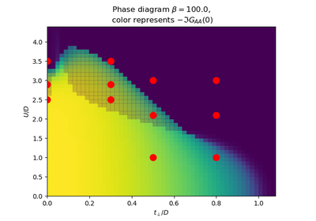

The Dimer Hubbard Model¶
This gallery covers the investigation done around the Dimer Hubbard Model in a Bethe lattice. I allows to establish a connection between a Mott insulator and a band insulator.



This gallery covers the investigation done around the Dimer Hubbard Model in a Bethe lattice. I allows to establish a connection between a Mott insulator and a band insulator.